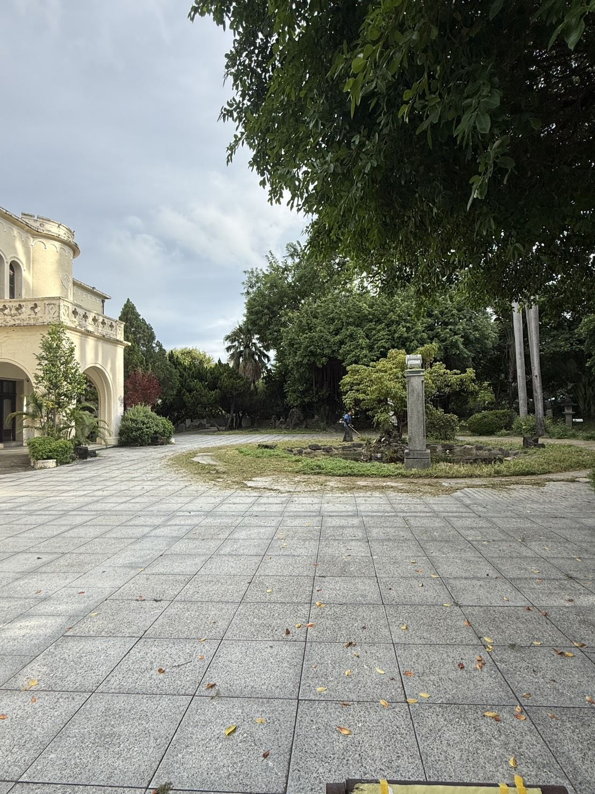
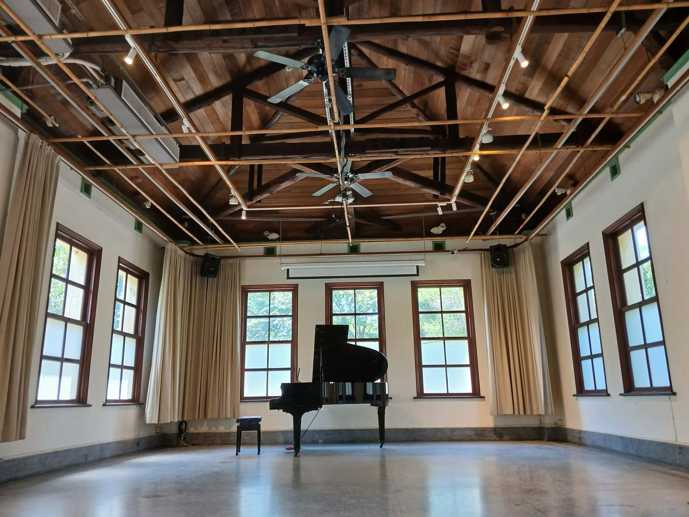
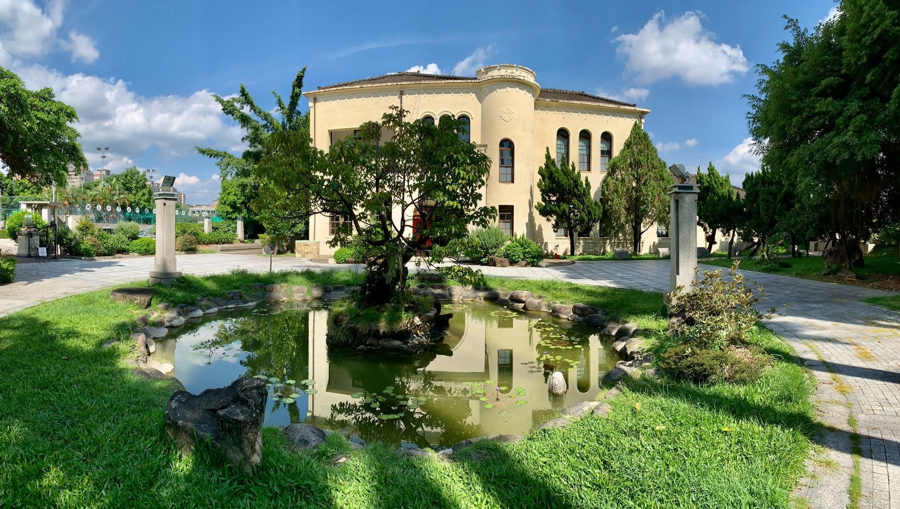

08 · 租借場地
你租的不只是場地，
是一整個台中音樂傳播生態圈
Venue Hire
在歷史建築裡辦音樂會、發表會或市集。平日親民、新秀有扶植、售票演出可零租金拆帳。
場地
從 80 席到 500 人

A 區
一樓多功能演藝廳
80–120席
不插電音樂會講唱會室內樂黑膠導聆品牌發表大師工作坊
點音源近場音響、無線麥克風、調光軌道燈、投影設備。
B 區
廣播綠意庭園與老榕廣場
300–500人
草地音樂節黑膠文創市集野餐音樂會品牌快閃
老榕、日池月池與洋樓立面，天然的戶外舞台背景。

A＋B
全區包場
室內＋戶外
年度音樂節企業活動婚禮派對影視拍攝
室內演出接戶外市集，一次串起整天的動線。
收費標準
常規藝文與一般活動
| 場地 | 平日（週一至週四） | 假日（週五至週日・國定假日） | 保證金 |
|---|---|---|---|
| A 區 室內演藝廳 | NT$ 8,000 / 時段 | NT$ 12,000 / 時段 | NT$ 5,000 |
| B 區 戶外庭園老榕廣場 | NT$ 12,000 / 時段 | NT$ 18,000 / 時段 | NT$ 10,000 |
| 全區包場（室內＋戶外） | NT$ 18,000 / 時段 | NT$ 26,000 / 時段 | NT$ 15,000 |
時段：上午 09:00–13:00／下午 13:30–17:30／晚間 18:00–22:00，每時段 4 小時，含進場裝台與撤場；超時以小時另計。含基礎場燈、固定音響、麥克風 2 支、投影、空調與現場管理員 1 名。清潔費每時段 NT$1,500，自行復原經查驗通過免收。
試算
算算看你的活動要多少
試算結果依暫定費率計算，僅供參考，不代表正式報價。
優惠方案
扶植青年、母語與長期夥伴
5 折學生社團與 30 歲以下青年創作，平日日間時段（NT$4,000 起）
65 折學生與青年創作，假日上午早鳥場
7 折演出內容過半為台語、客語或原住民語原創，經審核通過
85／75 折一次簽約 3 場以上系列／6 場以上年度專案
比較
和其他場地比一比
依大台中同量體藝文展演場地（80–120 席室內、300–600 人戶外）現況整理。
| 臺中放送局 | 文資・公部門場地 | 民營 Live House | |
|---|---|---|---|
| 租金 | A 區平日 NT$8,000 起，售票演出可零租金拆帳 | 相對平價 | 週末 4 小時 NT$15,000–25,000 |
| 申請流程 | 專人窗口，策展小組協助評估 | 行政審核期長、流程繁瑣 | 流程快 |
| 硬體 | 近場音響、調光燈、投影，戶外可搭舞台 | 音響燈光較陽春 | 設備完整 |
| 氛圍 | 1935 年昭和洋樓、94 扇窗、老榕庭園 | 有歷史感 | 偏冷硬的黑盒子 |
| 宣傳 | 官網、會員 LINE、社群與廣播合作導流 | 較少 | 僅提供場地 |
場地預約諮詢
告訴我們你的活動，
三個工作天內回覆
活動形式、預計人數與日期越清楚，我們越能幫你配好空間、時段與優惠方案。
營運單位：愛維藝文有限公司（AIWEI）
聯絡窗口與電話將於正式上線時公布。